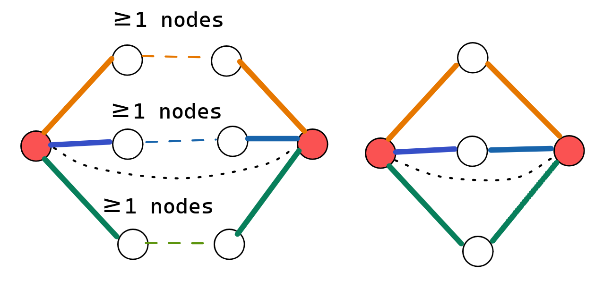
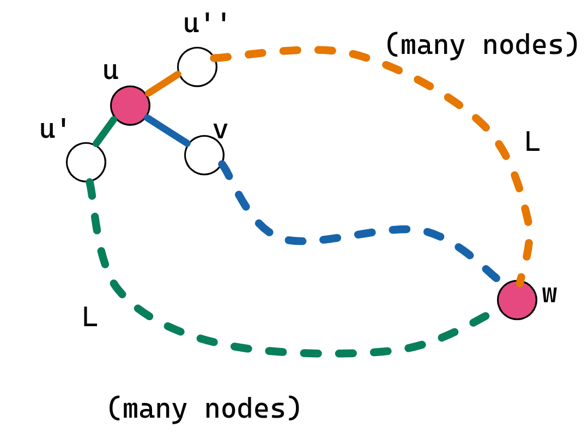
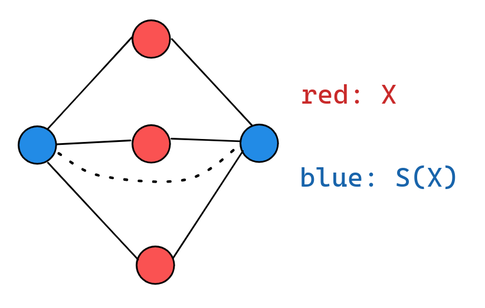
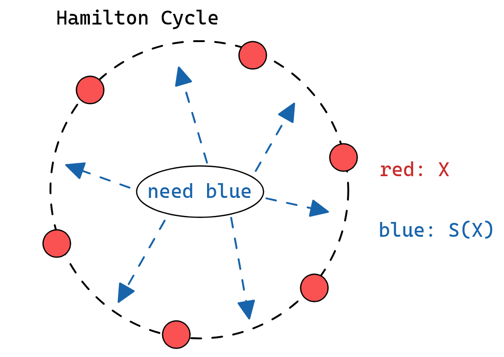
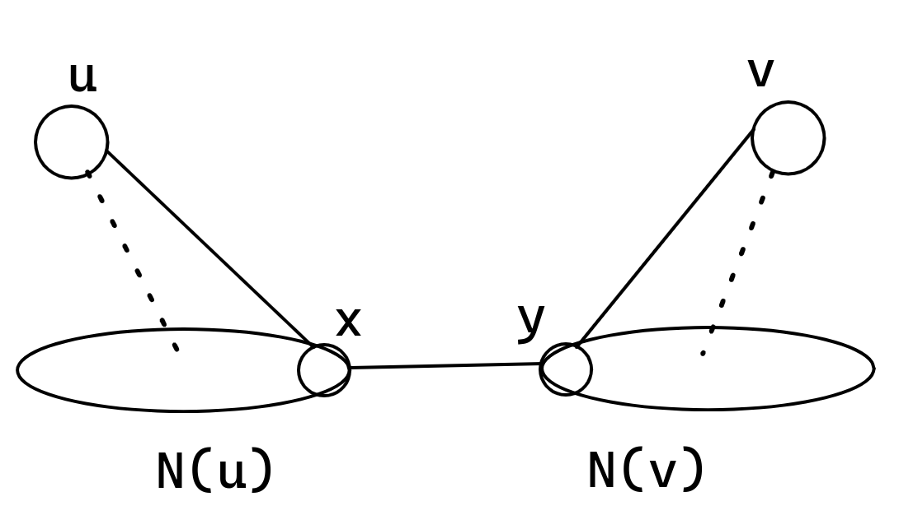

问题求解（三） Open Topic 3 笔记
OT：请调研教材中未介绍过的至少2种哈密尔顿路或哈密尔顿圈的存在性的必要条件或充分条件，讨论条件的适用场景，并阐述证明过程。
哈密尔顿图的充分且/或必要条件
一、哈密尔顿图与独立集
在 Anatoly D.Plotnikov 的一篇论文1中给出了判断一个图是否是哈密尔顿图的一个充要条件。他提出了利用图的独立集的性质来判断哈密尔顿图。
Def 1.(\(k\)-连通图) 对于 \(G=\langle V, E\rangle\)，若 \(|V|\ge k+1\) 且对任意 \(V'\subseteq V\) 且 \(|V'|\le k-1\)，\(G-V'\) 仍连通，则称 \(G\) 是 \(k\)-连通图。
- \(1\)-连通图：即非平凡的连通图。
- \(2\)-连通图：不含割点的连通图。
Theorem 1. 图 \(G\) 是哈密尔顿图的必要条件是 \(G\) 是 \(2\)-连通图。
但这不是充要条件，比如 \(\Theta\) 图。（\(\Theta\) 图：两个度数至少为 \(3\) 的点，之间通过至少三条路径相连，每条路径长度至少为 \(2\)。若每条路径长度恰为 \(2\)，则称为简化 \(\Theta\) 图）。

Theorem 2. 一个 \(2\)-连通图是非哈密尔顿图的必要条件是有 \(\Theta\) 图作为它的子图。
证明：设 \(G\) 是一个 \(2\)-连通图且不是哈密尔顿图，则 \(G\) 中最长圈 \(L\) 的长度小于 \(\upsilon(G)\)，由于 \(G\) 连通，故存在 \((u, v)\in E\) 满足 \(u\in L\) 且 \(v\in L\)。设 \(u'\) 和 \(u''\) 是 \(L\) 上与 \(u\) 相邻的两点，容易知道 \(u'\) 和 \(u''\) 与 \(v\) 之间均没有边相邻（否则可以把 \(v\) 放进去获得一个更大的圈）。由于 \(G\) 双连通，删去 \(G\) 后 \(v\) 也应该与 \(L\) 上其他点连通，故存在 \(w\in L\) 是 \(v\) 到 \(L\) 上某一条路径的第一个在 \(L\) 上的点，则如图，已然形成 \(\Theta\) 图。

Theorem 3. 任何是 \(2\)-连通图的非哈密尔顿图都可以收缩成 \(\Theta\) 图（进一步可以收缩为简化 \(\Theta\) 图）2
证明略，见原论文。
Def 2. 图 \(G\) 的独立集是点集 \(X\subseteq V\) 满足 \(G[X]\) 是空图。称点集 \(\mathcal S(X)\subseteq V\) 是独立集 \(X\) 的一个分割（seperating \(X\)），当且仅当 \(\mathcal S(X)\cap X=\varnothing\) 且在 \(G-\mathcal S(X)\) 中 \(X\) 中任意两点不连通。

Theorem 4. 图 \(G\) 是哈密尔顿图的充要条件是对于 \(G\) 任意的独立集 \(X\)，对其任何一个分割 \(\mathcal S(X)\) 都有 \(|X|\le | \mathcal S(X)|\)。
证明：
必要性，任取一个 \(G\) 的独立集 \(X\)，设它的最小分割是 \(\hat{\mathcal S}(X)\)。用反证法，设 \(|X|> |\mathcal S(X)|\)。在哈密尔顿圈中看这些点：

由于每个点都在圈上，故 \(X\) 均在圈上。为了把圈上相邻的 \(X\) 点分开，在每两个 \(X\) 点之间必须插入至少一个 \(\mathcal S(X)\) 点，故 \(|\mathcal S(X)|\) 至少需要 \(\ge |X|\)，与假设矛盾。必要性成立。
充分性，若对 \(G\) 的任意独立集 \(X\) 及其任何一个分割 \(\mathcal S(X)\) 都有 \(|X|\le |\mathcal S(X)|\)，假设 \(G\) 不是哈密尔顿图。分以下三种情况：
- 若 \(X\) 不连通，则在两个连通分支中选择两个 \(X\)，而 \(\mathcal S(X)\) 可以为空，则 \(2=|X|\le |\mathcal S(X)|=0\)，不满足前提条件。
- 若 \(X\) 连通但有割点 \(v\)，则在 \(G-v\) 的两个连通分支中选择两个 \(X\)，选择 \(\mathcal S(X)=\lbrace v\rbrace\)，则 \(2=|X|\le |\mathcal S(X)|=1\)，不满足前提条件。
- 则 \(X\) 是 \(2\)-连通图且不是哈密尔顿图，则 \(X\) 必然可以归约到 \(\Theta\) 图（进而可以归约到简化 \(\Theta\) 图），而在简化 \(\Theta\) 图中可以如图选择 \(|X|=3\) 但 \(|\mathcal S(X)|=2\)，同样可以对应到到原图中，与假设矛盾。
综上，充分性成立。
二、哈密尔顿图的一个充分条件
在 M.Sohel Rahman 和 M.Kaykobad 的一篇论文3中，提到了如下结论：
用 \(d_G(u)\) 表示在图 \(G\) 中 \(u\) 的度数。
Theorem 5. 若 \(G=\langle V, E\rangle\) 是一个 \(n\) 阶连通图，\(P\) 是图中的最长路，长度为 \(k\)，端点为 \(u\) 和 \(v\)。用 \(\delta(u, v)\) 表示 \(u\) 和 \(v\) 之间的距离。则：
- 若 \(\delta(u, v)=1\)，则 \(P\) 是一条在哈密尔顿圈中的哈密尔顿路；
- 若 \(\delta(u, v)\ge 3\)，则 \(d_P(u)+d_P(v)\le k-\delta(u, v)+2\)；
- 若 \(\delta(u, v)=2\)，则要么 \(d_P(u)+d_P(v)\le k\)，要么 \(P\) 是一条在哈密尔顿圈中的哈密尔顿路。
接下来来证明 Theorem 5.。先证明一个引理，以下指代 \(G\) 和 \(P\) 都是在 Theorem 5. 的基础上。
Lemma 1. 若 \(P\) 被包含在某个圈 \(C\) 内，则 \(P\) 是一条哈密尔顿路，\(G\) 是哈密尔顿图。
证明：首先，易知 \(V[P]=V[C]\)，否则 \(P\) 显然可以变得更长。设 \(P=\langle u=u_0, u_1, u_2, \cdots, u_k=v\rangle\)，则 \(C=\langle u=u_0, u_1, u_2, \cdots, u_k, u_0=u\rangle\)，假设 \(P\) 不为哈密尔顿路，则 \(k<n-1\)，由于 \(G\) 是连通图，存在 \((x, y)\in E\) 满足 \(x\in V[P]\) 且 \(y\in V[G-P]\)，设 \(x=u_i\)，则有一条长度为 \(k+1\) 的路径 \(P'=\langle y, x=u_i, u_{i+1}, \cdots, u_k, u_0, \cdots, u_{i-1}\rangle\)，矛盾。故 \(P\) 是哈密尔顿路，\(C\) 是哈密尔顿圈，\(G\) 是哈密尔顿图。
Theorem 5.
证明：
- 当 \(\delta(u, v)=1\)，则 \(C=P+(u, v)\) 是一个包含 \(P\) 的圈，由 Lemma 1.得证。
- 当 \(\delta(u, v)\ge 3\) 时，设与 \(u\) 相邻的顶点集为 \(N_P(u)\)，与 \(v\) 相邻的顶点集为 \(N_P(v)\)，可知 \(\forall x\in N_P(u), y\in N_P(v)\)，满足 \(\delta(x, y)\ge \delta(u, v)-2\)。容易知道 \(|N_P(u)|+|N_P(v)|+\delta(x, y)\le k\)，故 \(d_P(u)+d_P(v)\le k-\delta(u, v)+2\)。

- 若 \(\delta(u, v)=2\)，且 \(d_P(u)+d_P(v)\ge k+1=|V[P]|\)，把 \(P\) 写成 \(P=\langle v=w_1, w_2, \cdots, w_{|V[P]|-1}, w_{|V[P]|}=u \rangle\)。我们尝试找出两条相交的边 \((v, w_{i+1})\) 和 \((w_i, u)\)，这样可以构造出一个环 \(C=\langle w_1, w_{i+1}, w_{i+2}, \cdots, w_{|V[P]-1|}, w_{|V[P]|}, w_i, w_{i-1}, \cdots, w_2, w_1\rangle\)，于是由引理 1 得证。是否存在这样的 \(i\) 呢？设 \(S=\lbrace i: (v, w_{i+1})\in E\rbrace, T=\lbrace i: (w_i, u)\in E\rbrace\)，可知 \(|S|=d_P(u), |T|=d_P(v), |S\cup T|\le |V[P]|-1\)，故 \[ \begin{aligned} |S\cap T|=&|S|+|T|-|S\cup T|\\ \ge &d_P(u)+d_P(v)-(|V[P]|-1)\\ \ge &|V[P]|-(|V[P]|-1)\\ =&1 \end{aligned} \]
Theorem 6. 若 \(G=\langle V, E\rangle\) 是一个 \(n\) 阶连通图，且对于所有不相邻的两点 \(u, v\in V\)，有 \(d(u)+d(v)+\delta(u, v)\ge n+1\)，则 \(G\) 有哈密尔顿路。
证明略。